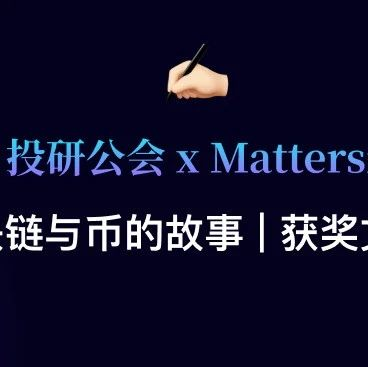

SeeDAO有奖征文 | 微故事: 十力口的比特币
作者: 东加豆
分类:
SeeDAO, 区块链, 比特币, SeeDAO投研, SeeDAO征文
本篇文章来自SeeDAO投研公会 x Matters 2月征文活动 区块链与币的故事，三等奖

本篇文章来自SeeDAO投研公会 x Matters 2月征文活动 区块链与币的故事三等奖
这是一个群体写作游戏。主题: 我与xx区块链网络的故事, 那么, 我便写了这篇, 希望大家喜欢。
—— 东加豆
｛十力口｝是一个很随性的人，他并不介意自己身在一个什么样的网络世界，是1.0、2.0也好、或是3.0，他只想在网络上谋生，因为根本没有人会愿意请一个｛画公仔｝的人给他月薪。尤其是当十力口已经不再年青，身边的行家已经有三个房子，在香港拥有三个房子是｛几巴闭｝的，可以鼻子朝天走，可是，十力口整副身家还不到二十万元，绝对不能告诉人家。然而，比特币｛Bitcoin｝却改变了十力口的命运。二零一四年，十力口拥有第一个比特币，事实上，当时他并不想要比特币，他想要美金的，因为美金很实在。十力口是一个没有冒险精神的人，而且加密货币却很抽象，去便利店买咖啡却不能，这样又怎相信它的实在性？当时的十力口的确是这么想，可是，别人只有比特币却没有美金，无奈的是，十力口最喜欢和这个人合作，他叫阿贾，是一个印度人。至少，阿贾是一个很有信用的人，他说付钱就会付钱，不似一些无赖，拿去了像素低劣的试画就失踪，人很低劣！阿贾要做线上游戏，他需要大量插图，十力口就替他画公仔，一个游戏接一个游戏，每次都以比特币清数，或者{狗狗币}，也有其它币，一些币就不好再提了。每一次完工之后，阿贾会问十力口想要什么币，每一次十力口都会说想要美金，然而，每一次阿贾都会说:没有美金，只有加密货币，而他存货量最多的就是比特币，这样，十力口只会说:随便吧! 只不过是十个八个比特币，没有什么可说，阿贾给他多少就多少，十力口从来没有看价位，他埋头苦干在其它地盘赚美金，三个月画一本书赚了二千五百元美金，很实在！然而｛人间一日，币圈十年。｝一天，十力口心血来潮查看价格，价位竟然是一万七千美元一个比特币，他很怀疑自己的眼睛，因为当时他拥有十五个比特币，那么，不是有二百多万港元？十力口不能相信比特币的价值，多过了他半生人的积蓄！那是二零一八年的事，十力口计划套现，始终美金比较实在。不过，突然又有几个地盘找他画公仔，他又马上开工，又开始过着人、画、公仔合一的生活，很疯癫的！当他忙完一切的工作，已经踏入二零一九年。十力口非常记得这一天，是一月一日。当他开始计划把比特币套现的时候，它的价位竟然跌至三千七百元！十力口很无奈，现在，只值四十三万港元，明明应该是二百万呀！十力口以为会生自己的气，或者很难过，但是他没有。｛不是你财、不进你袋！｝然而，经历了这事情之后，他开始探索区块链世界的其他可能性，他笔尖公仔与这个虚拟世界的可能性，绘出更多奇幻的可能性。如今，十力口有五十个比特币，今天一个比特币的价位是，五万二千一百三十四元八角一分二五。十力口要套现了！相关文章：
2024牛市开年有奖征文｜区块链与币的故事
文 | 东加豆
排版 | T1NG